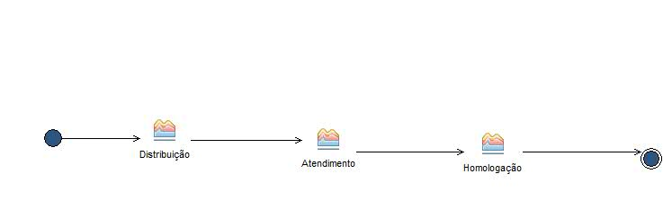

Delivery Process: Atendimento Central de Serviços SUAP
Processo de Atendimento de Chamados via Central de Serviços do SUAP no IFRN
Description
Work Breakdown Structure
Team Allocation
Work Product Usage
Workflow

Work Breakdown